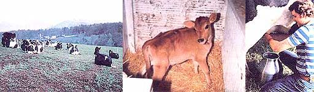

In MOTHER NO. 70, you were told how to select, house, and feed a homestead milk-producer. Now it's time to explore the all-important subjects of bovine reproduction and calf care.
A well-planned breeding program is one of the key aspects of dairy cow management, because each new freshening (birth) brings about that flow of nutritious milk. It's important, therefore, that you become very aware of Bossy's natural cycles.
Most cows will let you know when they're in heat by bawling, pacing along the fence, and generally acting ill at ease. These cycles will begin when the animal is about a year old and will occur every 21 days. They last, however, for only 12 to 18 hours, and-since your animal should be bred during the test half of that period-you'll have to keep a fairly close watch on her. Sometimes you'll see a slight bloody discharge about two days after a heat. If you do, you can then be prepared for the next cycle to begin 18 days later.
It doesn't make sense, of course, to own a bull if you've got only one cow, but artificial insemination services-using semen from top-quality, proven sires -are readily available in all parts of the country. .Just check with your county extension agent or a local dairy farm to find out the location of your nearest AI service.
Dairyfolk generally breed their heifers at 15 months of age, a practice which -since the gestation period lasts nine months-allows a cow to have her first youngster when she's 24 months old.
Once your milker has become a mother, she should be bred again during the first heat that occurs more than 60 days after she gave birth. This will not only bring you another calf, but will also assure a 305-day annual lactation period. (You can expect Bossy to be in her milkmaking prime when she's six to eight years old, and to continue producing well for two to nine years after that.)
It pays to be ready when the stork drops by your cow barn. As soon as the youngster is born, paint its navel with iodine and-using clean cloths-give the little critter a vigorous rubdown. Within 30 minutes, the tyke should be on its feet and very hungry. At that point, be sure that it gets its initial meal of the mother's nutritious and disease-preventing colostrum, or "first milk" ...and, after it's had its fill, strip out and freeze a gallon of the antibody-laden liquid in case you need it-to feed a calf rejected by its mother, for instance later on. (The colostrum will give way to normal milk after about the sixth milking.)
How you choose to feed the new arrival, until it's weaned, will depend somewhat on how much milk you want for your own use and how much time you have to spend with the little one. Generally, a calf will drink about 10% of its weight in milk ...up to a maximum of 10 to 12 pounds per day. (Just remember that too much food will give it the scours.)
The milk should be administered over the course of at least two daily feedings. To accomplish this, you can let the calf run with its mother and nurse whenever it wants to ...you can pen the mother and calf apart and then put them together for the calf's twice-a-day meals ...or you can milk the mother, and-using a pail with a calf nipple-feed the thirsty tad yourself. Of course, the less milk you let the youngster have (after it's gotten all it really needs), the more there'll be for you.
At one or two weeks of age, the calf will start to munch on solids, so be sure to keep high-quality hay (or pasture), clean (not slobbered on) grain, and a bucket of fresh water where it can easily get to them. By the time the youngster is two and a half to three months old, it should be eating two pounds of grain and hay a day and can be weaned. However, in order to give the calf a fast growth start, continue to feed it grain-in addition to providing plenty of good hay or pasture -until it's eating three and a half pounds a day.
When the small animal is three weeks old, it should be dehorned and (if it's a male) castrated. Both of these procedures (which you'll want to learn to do yourself) are quite necessary. After all, horns can be used to slice and gore humans and other critters ...and an adult bull in pursuit of a cow in heat can devastate nearly any fence. Castration, however, will turn the macho marauder into a gentle, lamblike steer, and-if done at about three weeks of age-will be less difficult for you and easier on the animal than if the procedure is postponed.
Cattle dehorning can be accomplished with gouges, caustic paste, or electric cautery irons that kill the tissue around the growths. When performing a castration, some folks employ a burdizzo to clamp the cords to the young bull's testicles, but I prefer to use a sterile scalpel or knife, proceeding as follows: Restrain the calf (see "Restrain That Beast!", MOTHER NO. 52, page 84), and then simply slice off the bottom third of the previously scrubbed scrotum ...gently pull each testicle until it breaks free ...and apply an antibiotic, along with an insect repellent if the operation is performed during the fly season. This technique will produce less bleeding, less postoperative swelling, and a lower risk of infection than will any other method ...and while a clamp can sometimes leave one or both cords intact-cutting will allow you to be absolutely certain that the job is finished.
If you're raising no more than a few cows, it's not necessary to cull the herd to improve its overall quality ...you started out with the best-quality stock you could acquire, remember? Instead, when you butcher each year's calf, you can simply look upon it as harvesting a part of the cow's annual produce.
No matter how many dairy beasts you have, you'll want to record the following information about each animal: date of birth, heat cycles, breeding day, freshening, and the date and reason for any medications used. In addition-in order to know whether your cow is making her way or simply eating hay-you should note the exact daily amount of milk she gives during the lactation period (see the accompanying sidebar).
The basic health program for your bovine buddy will pretty much follow the principles we've already talked about for other livestock (see "Ten Commandments for Healthy Livestock", MOTHER NO. 58, page 72). In addition to all the good husbandry practices you're already using (since, of course, you're religiously following the previous nine commandments), Bossy will need regular vaccinations (see "A Livestock Vaccine Primer", MOTHER NO. 66, page 66) ...a consistent worming program (see "How to Deal With Internal Parasites", No. 56, page 76 and No. 57, page 56) ...and annual tuberculosis and brucellosis tests.
Remember, too, that any medicines used for routine or nonroutine health reasons can be passed through the animal into the milk. The withdrawal time generally ranges from three to seven days, depending on the drug used. However, since some substances can remain in the milk even longer than that, be certain that-with each medicine-you always know exactly how many milkings should occur before the liquid is safe to drink.
And-speaking of milk-in the next Issue, I'll tell you how to properly handle the liquid food to insure that it tastes good and is safe to drink.
EDITOR'S NOTE: For further information on cow care, check at your local library or bookstore for The Family Cow by Dirk van Loon (Garden Way, $6.95) and Raising and Caring for Animals by Guy Lockwood, D. V. M. (Scribner's, $8.95). See page 148 to order the back issues mentioned above.
The Dairy Herd Improvement Association (DHIA) has put together a complete dairy-production recordkeeping system. It involves a tester or supervisor, employed by the local association branch, who visits the herd one day each month, and-after identifying each animal-weighs the milk from every cow for two consecutive milkings, and takes a milk sample. Records are also obtained on the amount of grain and roughage fed to each cow.
Using the samples and a complex system of calculation, the DHIA then provides a herd owner with an accurate appraisal of individual and herd milk production, butterfat percentages, feed costs, and income over and above the cost of feed. Such records are also supplied to state and federal agencies, which can help an individual farmer compare his or her animals with the national averages.
As you can see, then, the DHIA is meant to be a tool primarily for the big dairy farm ...a one-cow owner probably won't be able to have a representative visit on a monthly basis. (In Kansas, DHIA costs average $1.25 to $1.50 per cow, figured on a 00-cow herd ...with a'minimum charge of $20 to $30, depending on the distance traveled.)
However, you and some of your neighbors can benefit from Owner Sampler records ...simply contact your county extension agent, and ask him or her to help you set up an OS program. Using the forms provided by the agent, you collect and weigh your milk and calculate your cow's feed consumption. These figures along with other information, such as your cow's breeding dates-are fed into a central computer at the cost of about 25V per cow ...and the results will provide you with much of the same valuable information that's available through the DHIA. (However, OS-obtained figures are not approved for official records.)
Incidentally, both DHIA and OS methods can be used to keep accurate records for dairy goat herds as well as for cows. Furthermore, some of the modern DHIA and OS agencies have an additional test, called the Somatic Cell Count (SCC), which is used as a screening exam for mastitis (a subject we'll cover in No. 72).
|
 |
|
|